B-E.15.5 数通仪器仪表整机总线架构¶
所属章节：第五部 B. 总线协议 > E. 综合实战
难度：[M] | 预计阅读时间：60 分钟
本节导读¶
数通流量测试仪、协议分析仪、以及广义的机架式仪器，内部是嵌入式总线的另一种形态：前面板插一溜业务卡（每张卡上是 FPGA + PHY + 光模块笼），中间一块背板，后面主控卡。整机的总线架构天然分成三个正交的"面"——数据面跑被测业务流量，控制面跑主控到业务卡的配置下发，管理面跑带内监控（温度/电压/光功率/风扇/电源）。三个面的总线选型、拓扑、故障域完全不同，却又共用同一个机箱和背板。
这一类"机箱 + 背板 + 插卡"形态的产品远不止仪器仪表：刀片服务器、核心交换机、基站 BBU、PCIe 扩展机箱，架构方法完全同构。本篇以一台 2U 机架式流量测试仪为对象，把三面架构从划分原则一直拆到 bring-up 顺序和评审清单。
本节覆盖：机箱形态谱系与行业标杆实证（Keysight M9019A / Spirent SPT-N11U）、三平面划分原则与故障域、数据面的背板 SerDes 通道预算与 retimer 决策、卡间触发与同步、管理面的 I2C 树拓扑/总线锁死恢复/OpenBMC 配置驱动模式、控制面带内带外选型与 PCIe 热插拔信号时序、电源架构、整机 bring-up 六步流程、整机级排障与设计评审清单。
一、机箱形态谱系：为什么仪器长成这样¶
数通仪器仪表的整机形态，是被三个约束挤出来的：
- 端口密度约束：一台流量测试仪的价值正比于端口数 × 端口速率。2U 机箱前面板要塞下几十上百个光口，光模块笼（QSFP-DD/OSFP）的物理宽度直接决定了"每张业务卡出 8 个口、一个机箱插 8 张卡"这类格局。
- 算力与可重构约束：流量生成与统计是 FPGA 的主场（线速包逻辑、ns 级时间戳），但协议仿真、报表、用户界面是 CPU 的主场。所以每张业务卡 = FPGA + 少量 CPU/内存 + 光模块笼，主控卡 = 通用 CPU 跑 Linux 统管全局。
- 维护与扩展约束：端口速率三年一代（25G→50G→100G/lane），机箱和背板要用五年以上。背板只定"管道规格"，业务卡随速率代际更换——这是插卡形态存在的根本原因。
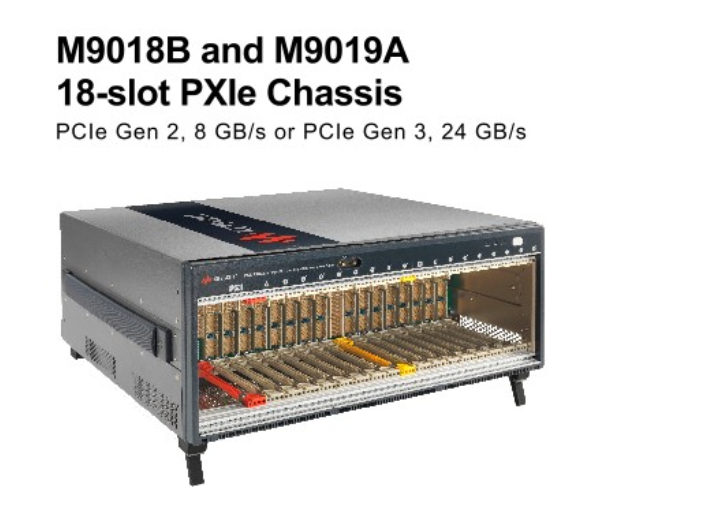
背板（Backplane）：一块没有有源器件（或只有极少有源器件）的厚 PCB，铺设卡间互连的走线与连接器。它不做数据处理，只做互连、供电分发和机械支撑。背板是整机里寿命最长的部件，其通道规格决定了整机能活到第几代速率。
对比三种同构产品的角色分配，可以帮助理解这套架构的普适性：
| 角色 | 流量测试仪 | 核心交换机 | 刀片服务器 |
|---|---|---|---|
| 主控卡 | x86 CPU，跑测试业务软件 | 主控引擎，跑路由协议 | 管理节点 + BMC |
| 业务卡 | FPGA + 光口，流量生成/分析 | 交换网板/线卡，转发 ASIC | 计算刀片 |
| 背板 | SerDes + 触发线 + I2C + 电源 | 正交背板（线卡直连网板） | PCIe/以太网 + IPMB |
| 管理面 | BMC 或管理 MCU + I2C 树 | 同左 | BMC + IPMI/Redfish |
形态各异，总线问题相同：多个高速数据通道怎么过背板、几十上百个低速监控点怎么汇聚、主控死了温控怎么办。这就是三平面划分要回答的问题。
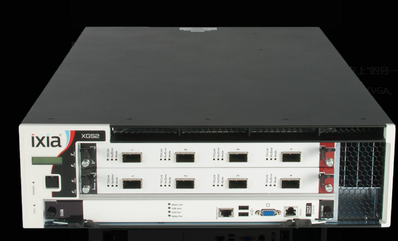
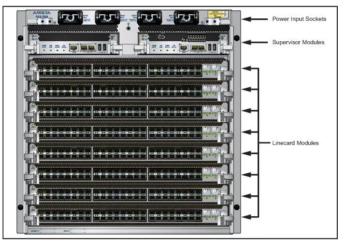
两个可验证的行业实证（参数均出自厂商公开数据手册，2026-08 核实）：
- Keysight M9019A（PXIe 18 槽机箱）：16 个混合槽位各配 x8 Gen3 链路，系统槽为 x8+x16 双链路共 24 条 lane、系统带宽 24 GB/s；外接 PC 经系统模块与线缆适配器可达 16 GB/s。槽位侧的 PCIe Switch Fabric 分两段、各由独立桥片服务；触发总线分三段、段间可配置互联，前面板两个 SMB 口接入 Trig(0:7) 以与非 PXI 仪器同步；支持多机箱电源级联。指标环境 55 °C / 10,000 ft。这是"Switch 扇出 + 分段触发总线"形态的完整参照。
- Spirent SPT-N11U（流量测试仪机箱）：11RU/12 槽，单机箱近 4 Tbps 流量；时钟同步支持 PTP（IEEE 1588v2）、GPS、CDMA 与外部定时接收机，多机箱级联带同步线缆自动校准——印证本篇 3.2 的论点：工程产品把"精确同步"当成独立子系统设计，而不是数据网的附属功能。
💡 对标阅读时把注意力放在架构决策上（为什么分段、为什么双链路、为什么外挂时钟），而不是具体数字——数字三年换代，决策逻辑十年有效。
二、三平面划分：按流量性质和故障域切分¶
┌─────────────────────── 2U 机箱 ───────────────────────┐
│ │
│ 数据面：业务卡 FPGA ══ SerDes（板内/背板）══ 光模块笼 │
│ 被测流量 100G/400G/800G 光口，卡间触发线，参考时钟分发 │
│ │
│ 控制面：主控卡 ══ PCIe / 以太网（背板）══ 业务卡 │
│ 配置下发、状态回收、固件升级 │
│ │
│ 管理面：管理 MCU/BMC ══ I2C/PMBus 树 ══ 每块卡 │
│ 温度、电压、风扇、电源、光模块 DOM、在位检测 │
│ │
│ 电源：背板 12 V/48 V 主干 + 热插拔控制 + 各卡点载 POL │
└────────────────────────────────────────────────────────┘
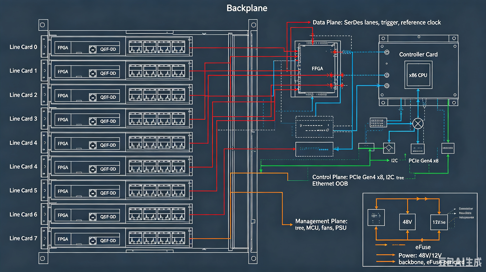
分面的依据不是"信号速率不同"这个表象，而是三行字的根本差异：
| 面 | 流量性质 | 数据量级 | 实时性要求 | 失效后果 | 设计原则 |
|---|---|---|---|---|---|
| 数据面 | 被测业务流量 | Tbps 级 | ns 级时间戳 | 测试中断 | 纯硬件通路，与软件无关 |
| 控制面 | 配置/状态/升级 | MB 级 | ms 级即可 | 无法操作设备 | 可靠优先，走标准协议栈 |
| 管理面 | 监控遥测 | KB 级 | 百 ms 级轮询 | 失去硬件可见性 | 必须独立于主控存活 |
三行各值得展开：
数据面为什么必须纯硬件通路。 流量测试仪的被测流量可能达到整机数 Tbps，任何软件路径（哪怕 DMA + 内核协议栈）都是瓶颈和不确定性的来源。更微妙的是测试设备自身的可信度：如果测试仪的时间戳经过软件调度才打上，测量结果本身就污染了。所以数据面从光模块到 FPGA 到 DDR 缓存全程硬件，CPU 只在测试开始前配置、结束后读统计。
管理面独立性是最容易被砍掉的 design rule。 主控 SoC 跑 Linux 会死机、会重启、会升级内核；风扇调速和过温保护不能跟着死。所以管理面挂在一颗独立的管理 MCU（或 BMC）上，主控通过它间接访问遥测。服务器行业把这条原则做到了极致——BMC 有独立电源轨、独立网口、独立固件，IPMI/Redfish 协议定义了主控与 BMC 的标准分工；仪器仪表是它的简化版，但"管理面电源独立于被管理对象"这条不能简化。
💡 判断自己产品的管理面设计是否合格，一个问题就够：拔掉主控卡，风扇还能不能根据温度调速？过温还能不能断电保护？不能，管理面就是假独立。
控制面介于两者之间，选型空间最大，放在第五节展开。
三、数据面：背板 SerDes 与通道预算¶
3.1 业务卡内部与卡间互连¶
业务卡内部：
光模块笼(QSFP-DD×8) ══ 56G/112G PAM4 SerDes ══ FPGA
FPGA ══ PCIe Gen4 x16 ══ 卡上 CPU（本地预处理）
FPGA ══ PCIe Gen4 x8 ══ 背板 ══ 主控卡 CPU（全局汇聚）
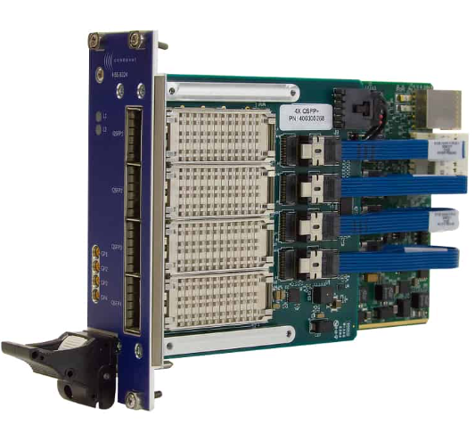
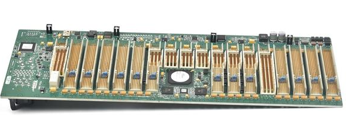
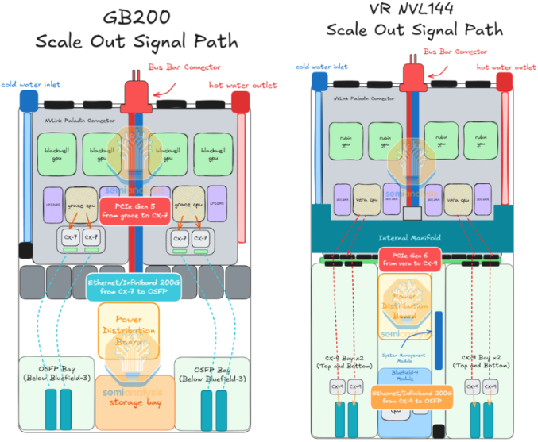
三个设计要点逐条展开。
3.2 触发与同步：为什么走专用低速线¶
多卡联合测试（如 64 口同时打流测交换机）时，要求所有卡在同一时刻开始发包——"同一时刻"的精度直接决定测量有效性，典型要求是卡间触发偏差 < 10 ns。
时间戳（Timestamp）：FPGA 在报文经过的硬件瞬间打上的时刻标记，分辨力通常 1~8 ns。它是流量测试仪测量延迟、抖动的原始依据，其精度由参考时钟和触发对齐共同保证。
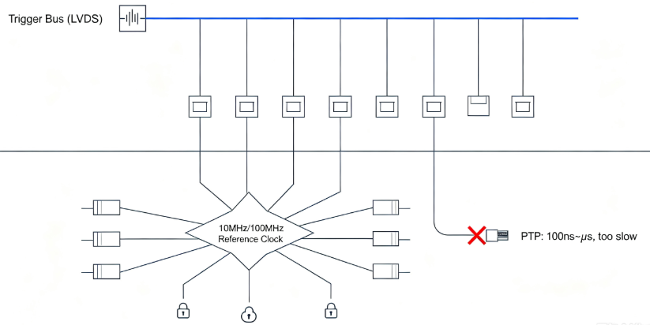
实现方式是背板上的两条专用资源：
- 触发线：一对 LVDS 差分线从主控卡连到所有业务卡（广播拓扑）。主控 FPGA 拉一个边沿，各卡 FPGA 在同一时钟域内采样到。配合触发前的"对齐握手"（各卡上报本地时钟相位，主控计算补偿值），可把卡间偏差压到 ns 级。
- 参考时钟：主时钟卡输出 10 MHz（频率基准）与 100 MHz/156.25 MHz（SerDes 参考）经背板星形分发，各卡 PLL 锁定。全机箱同频之后，各卡时间戳才可比——这是"多卡测得的两条流之间的时延差"有意义的物理前提。
为什么不用 PTP（IEEE 1588）做这件事？PTP over 以太网的商用实现精度在百 ns 到 μs 级（硬件时间戳 + 边界时钟条件下），离 ns 级差三个量级；而且 PTP 依赖数据面链路状态，数据面本身就绪前同步无从谈起。专用低速线做同步、数据网只做业务，是测试仪器与通信设备共享的架构常识。
3.3 背板 SerDes 通道预算：一个可套用的核算实例¶
背板走 25G/56G/112G SerDes 时，能不能走通不是经验问题，是预算问题。以一条"业务卡 FPGA → 背板 → 主控卡 CPU"的 PCIe Gen4 x8（16 GT/s，奈奎斯特频率 8 GHz）链路为例，逐段核算插损：
| 通道段 | 估算依据 | 插损 @8 GHz |
|---|---|---|
| 业务卡 PCB 走线 4"（Megtron 6，约 0.55 dB/inch @8 GHz） | 板材手册 + 走线长度 | -2.2 dB |
| 背板连接器 ×2（业务卡侧 + 主控卡侧） | 连接器 S 参数（每个约 0.5~1 dB） | -1.5 dB |
| 背板走线 10"（Megtron 6） | 同上 | -5.5 dB |
| 主控卡走线 3" | 同上 | -1.7 dB |
| 过孔/AC 耦合电容/封装 | 每处 0.3~0.5 dB，合计 | -1.5 dB |
| 合计 | 约 -12.4 dB |
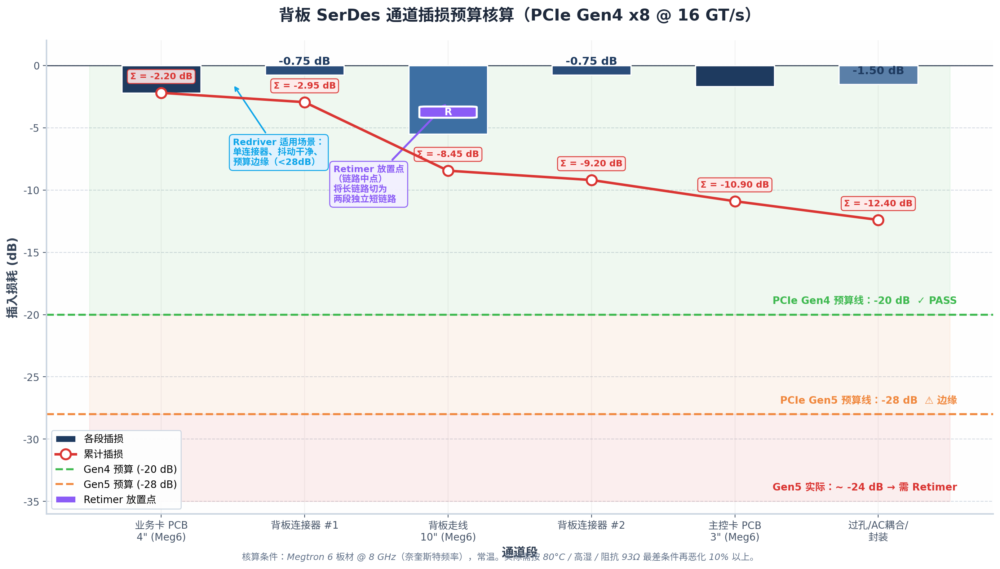
Gen4 的系统板插损预算约 -20 dB（含余量口径见 PCIe CEM 规范），这条链路有充足裕量，可以直连。但如果速率升到 Gen5（32 GT/s，奈奎斯特 16 GHz），同样物理路径的插损近似翻倍到约 -24 dB，超出预算——此时只有三条路：换更低损耗板材、缩短走线、或者加 retimer。
💡 核算用的单位损耗数值务必取目标奈奎斯特频率下的值，而不是随手引用"约 1 dB/inch"——Megtron 6 在 16 GHz 约 1 dB/inch，在 28 GHz（56G PAM4）约 1.4 dB/inch，且高温高湿与阻抗公差会再恶化 10% 以上。预算要按最差条件（80 °C、高湿、阻抗 93 Ω）核算，不是按实验室常温。
3.4 Redriver 与 Retimer：背板互连的关键选型¶
通道预算不够时，两颗器件是标准答案，但分工完全不同：
Redriver（转接驱动器）：模拟器件。对信号做增益与线性均衡（CTLE），不重定时。优点：延迟低（亚 ns）、对协议透明、便宜；缺点：不恢复时钟，线上已有的抖动被原样放大。
Retimer（重定时器）：数字器件，内含完整 CDR（时钟数据恢复）。把信号完整接收、重新定时、重新均衡后再发一遍，等效于把一条长链路切成两条独立的短链路。优点：复位抖动、协议感知（参与 PCIe 链路训练）、鲁棒；缺点：增加延迟（约 10~20 ns）、功耗与成本更高、需要配置管理。
工程选型口径（PCIe 场景）：
| 条件 | 选择 |
|---|---|
| 通道总插损在预算边缘（Gen4/Gen5 约 28 dB 以内）、单连接器、抖动干净 | Redriver 足够 |
| 超过预算、或经过两个以上连接器/背板/riser 的多板链路 | Retimer |
| Gen5/Gen6 的多板背板链路 | 直接 Retimer，Gen6（PAM4，眼高仅 30~40 mV/级）下 redriver 基本出局 |
放置位置同样关键：retimer 放在链路中点或背板连接器边界——它的意义是把链路切成两段各自合规的短链路，放在一头就浪费了一半价值。redriver 则放在最大损耗段之后就近补偿。仪器仪表的背板架构里，retimer 通常焊在业务卡或背板两侧，且其配置寄存器挂在管理面 I2C 树下（下一节）——链路训练失败时，读 retimer 的眼睛裕量寄存器是首要定位手段。
⚠️ 不要级联多个 redriver。残差抖动逐级放大，最终眼图可能不如不加；拿不准时默认 retimer——它重建时钟域，是可预期、可仿真的方案。
3.5 光口代际与整机演进¶
前面板光口的代际直接决定整机的数据面天花板，当前（2026 年）格局：
| 代际 | 单 lane 速率 | 模块形态 | 管理接口 | 部署状态（2026） |
|---|---|---|---|---|
| 400G | 4×100G 或 8×50G | QSFP-DD / OSFP | CMIS 4.0 | 成熟，存量主力 |
| 800G | 8×100G | QSFP-DD800 / OSFP | CMIS 5.x | 规模放量（IEEE 802.3df 已于 2024 年底定稿） |
| 1.6T | 8×200G | OSFP / QSFP-DD1600 | CMIS 5.2+ | 起量中（802.3dj 推进中），AI 集群拉动 |
对整机设计的两点影响：
- 管理面必须跟上 CMIS 版本演进。1.6T 模块需要 CMIS 5.2+ 的固件管理与遥测能力，整机 I2C 管理树（含 BMC 固件里的 CMIS 状态机实现）要按目标代际对齐，否则模块插在笼子里点不亮。CMIS 状态机本身的细节见 B-D.14.5，本节只在整机视角处理它的批量编排（见 4.5）。
- 功耗墙先于带宽墙到来。800G 模块单只 13~18 W，32 口满配仅光模块就 500 W 级；1.6T 更高。这直接推高电源架构（第六节）与散热设计（风道、风扇墙、液冷预留）的权重——数据面选型和管理面温控是同一个问题的两面。
💡 产业趋势上，CPO（共封装光学）在交换机领域开始进入送样阶段，但 2026~2027 年可插拔模块仍是测试仪器与 PCIe 卡类产品的绝对主流——测试仪器恰恰必须保持可插拔形态，因为被测对象就是各种模块本身。
四、管理面：I2C 树的设计¶
4.1 一棵真实规模的 I2C 树¶
管理面是以管理 MCU 为根的一棵 I2C 树。8 卡机箱的真实规模拓扑：
┌─────────────┐
│ 管理 MCU │（独立电源轨，独立看门狗）
│ I2C0 I2C1 │
└──┬──────┬───┘
风扇/电源/机箱器件 │ │ 背板 I2C（100 kHz 起步）
┌──────────────────┘ └────────┬───────────────┐
│ │
┌────┴────┐ ┌────┴─────┐
│ 风扇×4 │ │ PCA9548 │ 8 通道 I2C 多路复用器
│ PSU(PMBus)│ │ (背板连接器旁)│
│ 温度×2 │ └────┬────┘
└─────────┘ ┌───────┬───────┼───────┬───────┐
▼ ▼ ▼ ▼ ...（每通道一卡位）
┌────────┐┌────────┐
│ 业务卡0 ││ 业务卡1 │ 每卡段内：
│ 卡MCU ││ 卡MCU │ 卡MCU 再分一路本地 I2C：
│ 温度 ││ 温度 │ 温度×3、电压监控(INA230)、
│ EEPROM ││ EEPROM │ EEPROM、光模块笼 I2C×8、
└────────┘└────────┘ retimer 配置、热插拔控制
树上每类器件的职责：
| 器件类别 | 代表型号/标准 | 挂载位置 | 监控/控制内容 |
|---|---|---|---|
| 温度传感器 | TMP102/LM75 类 | 各卡 + 机箱进出风口 | 板卡关键点、风道温度 |
| 电压电流监控 | INA230/INA233 | 各卡各电源轨 | 轨电压、电流、功耗累计 |
| 热插拔控制器 | ADM1278/LM5066 类 eFuse | 各卡电源入口 | 上电浪涌限制、过流保护、电压电流遥测 |
| 电源模块 | PMBus PSU | 机箱电源槽位 | 电源状态、告警、黑盒日志 |
| 光模块 | CMIS / SFF-8636 | 各卡笼位（经卡 MCU 转发） | DOM 五项、在位、LowPwr/HighPwr 切换 |
| 在位检测 | Present# 引脚 | 卡槽 → GPIO 扩展器/卡 MCU | 热插拔事件的第一信号 |
| EEPROM | AT24C 类（0x50~0x57） | 每卡 + 背板 + 风扇框 | 序列号、校准数据、MAC、背板通道参数 |
| Retimer | PCIe Gen5/6 retimer | 各卡/背板 | 链路状态、眼图裕量、EQ 配置 |
4.2 地址冲突：两种拓扑的取舍¶
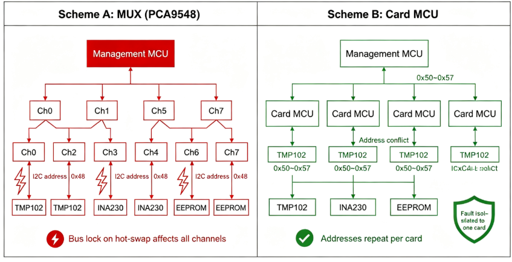
同型号业务卡插 8 张，每张卡上的 TMP102 地址都是 0x48——I2C 的 7 位地址空间装不下重复设备。两种解法：
方案 A：多路复用器（PCA9548）分通道。 背板 I2C 只挂一颗 mux，8 个下游通道各接一张卡。访问某卡器件时先写 mux 寄存器选通道，再访问器件。优点：BMC 直达每个器件，链路短；缺点：每次访问多一跳 mux 配置，且通道切换状态机与热插拔交织时容易出边界 bug（拔卡瞬间 mux 还选在该通道，SDA 被拉死会殃及下次切换）。
方案 B：卡 MCU 汇聚。 每张业务卡上的卡 MCU 管理本卡所有 I2C 器件，背板 I2C 上只有 8 个卡 MCU 地址。BMC 与卡 MCU 之间定义私有命令协议（读温度/读光模块 DOM/升级卡 MCU 固件……）。优点：背板总线干净、卡内器件地址随便用、卡 MCU 还能做本地保护逻辑（本卡过温本地断电，不依赖 BMC 轮询）；缺点：多一层固件要维护。
机箱产品的通行做法是 B 为主、A 为辅：卡 MCU 汇聚卡内器件，mux 留给无法汇聚的场景（如背板上直接挂的 PSU PMBus 段与卡段隔离）。纯 mux 方案在卡数少（≤4）、卡上无 MCU 的低成本产品里也成立。
4.3 总线锁死与恢复¶
热插拔过程中 I2C 时序被打断，从机可能在传输中途被拔走，把 SDA 一直拉低——主机看到的总线永远忙，后续所有通信失败。这是热插拔设备上必然遇到的故障，恢复逻辑是设计项不是调试项：
- 检测：主机连续两次 START 超时，判定总线异常（SCL/SDA 电平用 GPIO 回读确认）；
- 恢复：把 SCL 切 GPIO 模式，手动打最多 9 个时钟脉冲——从机的状态机在收到足够时钟后会退出当前传输、释放 SDA；随后补一个 STOP 条件；
- 隔离：mux 方案下断开故障通道即可恢复其余通道；卡 MCU 方案下卡 MCU 负责本卡段的恢复，BMC 只需复位卡 MCU 的 I2C 控制器；
- 预防：热插拔流程里，拔出前先停该卡段的轮询、关 mux 通道，插入时等电源稳定（eFuse PG）再开通道。
器件层的配合：背板 I2C 段长、容性负载大且直接经历热插拔，缓冲器要选带热插拔支持的型号——如 TCA4311A（插入时隔离两侧总线直到空闲、支持上升沿加速），而不是普通电平缓冲器 TCA9517。这类器件把"插拔瞬间的半截时序"挡在主干总线之外，与软件恢复逻辑形成两道防线。
⚠️ Linux 下
i2c-dev驱动的超时恢复能力因控制器而异，很多 SoC 的 I2C 控制器驱动没有总线恢复实现。产品里这段逻辑通常放在 BMC/管理 MCU 的裸机或 RTOS 固件里做，不要指望主控 Linux 兜底——这又一次回到"管理面独立"原则。
4.4 管理面固件：从裸机 MCU 到 OpenBMC¶
管理 MCU 上的固件有两种规模：
- 裸机/RTOS 轮询循环：仪器仪表的主流形态。一个主循环轮询 I2C 树、执行风扇 PID、处理热插拔中断，几百到几千行代码，可验证性极好。
- OpenBMC 类架构：当机箱管理对象多到轮询循环写不动时（几十个传感器、多种卡型混插），服务器行业的做法值得借鉴——Entity Manager 用 JSON 描述"什么卡上有什么器件"，
fru-device扫描 I2C 发现 FRU EEPROM 后触发对应配置加载，dbus-sensors按配置拉起传感器扫描循环，phosphor-fan-control执行温控闭环，主控侧通过 PLDM/Redfish 取数。核心思想是配置驱动而非硬编码：换卡型改 JSON 不改固件。
仪器产品即使不用 OpenBMC 本身，"FRU EEPROM 描述卡上器件清单 + 管理固件按描述动态建立监控"这个模式也值得抄——它把 4.2 方案 B 的卡 MCU 汇聚从"每卡一份定制固件"变成"一套固件 + 每卡一份描述"。
4.5 光模块批量编排：整机视角的 CMIS¶
单模块的 CMIS 状态机（LowPwr → HighPwr 切换、AppSel 选择、DPInit 等待）在 B-D.14.5 已展开，这里只讲整机独有的问题：64 只 800G 模块同时上电会发生什么。
- 电流浪涌：每只模块 LowPwr → HighPwr 切换瞬间功耗从 1.5 W 跳到 13~18 W。64 只同时切换，12 V 主干的瞬态电流增量超过 70 A，足以触发 PSU 过流保护。所以整机软件必须分批切换：按笼位分组，每组 4~8 只，组间隔 100 ms 级延迟。
- 温度联锁：模块 DSP 在 HighPwr 下发热集中，批量切换前管理面要确认风扇已在高占空比运行，切换后监控每只模块的壳温（DOM 温度字段），超阈值回退 LowPwr 并告警。
- 故障域隔离：单只模块 CMIS 状态机卡死（如 DPInit 超时）时，不能阻塞其他模块的初始化遍历——管理面软件按笼位独立状态机实现，失败的笼位标记重试，不影响其余。
这三条在单模块实验环境里永远不会暴露，是整机产品与评估板经验的本质区别。
4.6 热插拔状态机¶
业务卡热插拔是仪器仪表（长时间运行、按需换卡）的标配能力，完整状态机涉及三个面的协同：
插入：Present# 拉低 → 管理面确认卡型(EEPROM) → eFuse 缓上电(浪涌限制)
→ POL 时序启动 → PG 链就绪 → I2C 段使能 → 卡 MCU 心跳建立
→ 通知控制面"新卡在位" → PCIe 链路训练(带内) / 管理网口(带外)
→ 数据面 SerDes 就绪 → 卡上线
拔出：用户先下发"卡下线"（软件优雅停止数据面业务）
→ 停 I2C 轮询 → 关 mux 通道 → eFuse 断电 → 通知控制面移除设备
→ Present# 断开兜底（用户直接拔卡时，断电必须抢在连接器针脚脱离前）
连接器的针脚长度分级（Present# 最短、电源针最长、信号针居中）保证"先通电后通信号、先断信号后断电"——这是机械层面对热插拔的支持，软件状态机只是配合它。突然暴力拔卡时，管理面从 Present# 中断到 eFuse 关断的反应窗口只有毫秒级，这段路径必须在 MCU 固件里硬连线实现，不能走 Linux 中断。
五、控制面：带内、带外与固件升级¶
5.1 三种形态¶
| 形态 | 物理路径 | 优点 | 缺点 |
|---|---|---|---|
| 带内 | 主控 ══ PCIe（背板）══ 业务卡 FPGA/卡 CPU | 带宽大，BAR + DMA 下发配置微秒级 | 依赖链路训练成功，两边都得活着 |
| 带外 | 主控 ══ 背板以太网交换芯片 ══ 各卡管理网口 | 独立于数据面与 PCIe 状态 | 多一颗交换芯片与每卡一组网口 |
| 混合 | PCIe 为主 + 以太网兜底 | 两者互补 | 软件维护双通道与一致性 |
仪器仪表的常见形态是混合：正常工作时配置走 PCIe（BAR 访问 + DMA 下发流表，即 B-D.10.6 实战的那套机制），业务卡 FPGA 异常或 PCIe 链路未训练时退回以太网带外通道做恢复。
5.2 固件升级通道与防变砖¶
带外通道的第二职责是固件升级路径。业务卡上有三类固件要升级：FPGA bitstream、卡 MCU 固件、光模块固件（CMIS 5.x 支持模块固件在线升级）。升级失败变砖是插卡产品的头号服务事故，标准防御：
- 双镜像 + 回退：FPGA 的 SPI Flash 分 Golden（出厂保底，只读）+ Update 两区。Update 启动失败（看门狗超时或自检 CRC 错）自动回退 Golden，Golden 里只保留最基本的带外通信与升级能力——哪怕只剩一口气，也能再刷一次。
- 升级走带外：FPGA 在线升级（改写 SPI Flash）走以太网带外，不依赖被升级的 FPGA 自身功能。走带内升级等于"踩着梯子锯梯子"。
- 断点保护：升级过程掉电，Golden 区不受影响，重新上电后从 Golden 起来重新升级。
💡 光模块固件升级有特殊性：CMIS 规定了模块升级的状态机与密码保护，且模块厂商对第三方刷写有保修限制。仪器产品一般只做"读取模块固件版本 + 按厂商工具升级"，不自研刷写路径。
5.3 PCIe 热插拔的信号级时序¶
4.6 的状态机描述了三个面的协同流程，落到 PCIe 带内通道上，还有一组专用信号决定了插拔的物理时序（信号定义细节见 B-D.10.4，此处只讲整机配合）：
| 信号 | 方向 | 职责 |
|---|---|---|
| PRSNT# | 卡 → 主控 | 在位检测，连接器里最短针脚之一，最先接通最后断开 |
| PWRGD | 电源 → 卡/主控 | 各路电源稳定后拉高，是释放复位的条件 |
| PERST# | 主控 → 卡 | PCIe 复位，上电期间保持低，撤销后才开始链路训练 |
| MRL# / Attention Button | 机箱 → 主控 | 手动保持锁与热插拔按钮，触发"请求移除"中断 |
插入路径的完整链条：PRSNT# 接地 → 管理面中断 → 读卡型（EEPROM）→ eFuse 缓上电 → PWRGD 稳定 → 释放 PERST# → LTSSM 链路训练 → 枚举 BAR → 驱动加载。拔出路径是其镜像：Attention Button 或直接拔卡触发中断 → 软件停业务、卸驱动 → 下电。关键纪律：PERST# 的释放必须等到 PWRGD 之后——提前释放会让 PHY 在电源未稳时开始训练，表现为间歇性训练失败，是整机排障里的经典陷阱。
六、电源架构：三面的共同地基¶
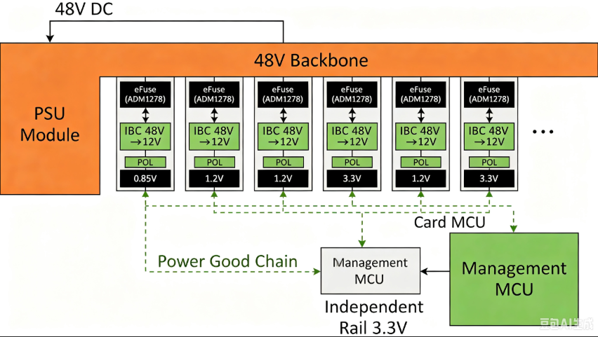
电源不是总线，但它是所有总线能否工作的前提，且在机箱产品里与热插拔深度耦合：
- 背板主干选择：2U 机箱功耗超过 2 kW 时，12 V 主干意味着 170 A 级电流，背板铜皮与连接器都吃力——所以中高功耗机箱转向 48 V 主干（电流降四倍），各卡用 48→12 V 中间母线转换器（IBC）再点载 POL 降压。流量测试仪满配光模块时正处在这个分界线上。
- 热插拔控制器（eFuse）：每卡入口一颗（ADM1278/LM5066 类），完成浪涌限制（软启动）、过流/短路保护、电压电流遥测（PMBus 上报管理面）。它是"热插拔不伤电源"的物理执行者。
- PG 链（Power Good）：各卡 POL 的 PG 信号串成链或汇聚到卡 MCU，PG 未就绪则 SerDes 参考时钟 PLL、PCIe 复位（PERST#）都不释放。bring-up 第一步查的就是这条链。
七、整机 bring-up 六步¶
1. 电源与时序
内容：背板主干电压、各卡 eFuse 输出、POL 时序、PG 链
判据：空载上电各路电压在窗口内，示波器时序与设计一致
失败分支：不过则停——后五步都建立在这步之上
2. 管理面
内容：管理 MCU 启动，扫 I2C 树，读全机箱温度/电压/在位
判据：所有卡位状态可见；风扇闭环调速生效（人为加热一点验证）
失败分支：I2C 扫描卡死 → 总线锁死恢复流程（4.3）
3. 控制面带外
内容：各卡管理网口 ping 通，卡 MCU 心跳
判据：主控到每卡双向通信，不依赖 PCIe
失败分支：跳过该卡先测其余——带外的价值就是带内不通时还能定位
4. 控制面带内
内容：PCIe 枚举（lspci），链路速率/宽度核对，retimer 裕量读取
判据：所有卡按设计速率宽度训练成功（如 Gen4 x8），AER 计数为零
失败分支：降速/降宽 → 读 retimer 眼图裕量 → 通道预算复查（3.3）
5. 数据面
内容：光模块分批切 HighPwr（4.5），FPGA SerDes PRBS 自环误码测试，
参考时钟锁定确认，触发线对齐校准，最后接被测设备
判据：PRBS31 零误码 24 小时（每个光口、每档速率）
失败分支：单 lane 误码 → 定位到笼位/lane → 查该段通道
6. 系统级
内容：多卡同步触发精度实测、长时间稳定性、热插拔演练、
满配功耗与温控烤机
判据：触发偏差在规格内；72 小时无告警；热插拔 50 次无异常
这个顺序的原则是面与面解耦验证：管理面不通就不上大电流；带内不通先用带外定位；数据面最后才接被测设备。每个面的故障域独立，bring-up 时间才不会指数膨胀。
八、排障：整机级故障¶
| 症状 | 优先怀疑 | 验证方法 |
|---|---|---|
| 某卡时好时坏 | 背板连接器接触、该卡 I2C 段锁死 | 管理面读卡 MCU 状态；热插拔复现；总线恢复流程 |
| 全机箱温度告警 | 风扇策略失效、风道堵塞、光模块满配功耗超预期 | 风扇转速与温度曲线对照；PSU 功耗遥测核对 |
| PCIe 降速到 Gen1/降宽 | 背板通道损耗、连接器氧化、retimer 配置丢失 | lspci -vv 对比 LnkSta/LnkCap；AER 计数；读 retimer 眼图裕量 |
| 光模块链路 flap | CMIS 状态机未切 HighPwr、收光不足、模块过温回退 | 读模块 DOM 与状态机；光功率计对测 |
| 批量模块上电后 PSU 保护 | HighPwr 切换未分批，浪涌超限 | 管理面日志核对切换时间戳；分批策略复核 |
| 卡间触发偏差大 | 参考时钟未锁定、触发线不等长、对齐握手未完成 | 示波器测各卡时钟相位与触发延迟；对齐握手日志 |
| 升级后某卡失联 | 带外升级中断留下半砖 | Golden 回退机制验证；带外通道重刷 |
| I2C 总线整体卡死 | 某从机拉死 SDA（常见于热插拔后） | GPIO 回读 SDA/SCL 电平；9 脉冲恢复；逐级隔离定位 |
九、设计评审清单¶
本篇内容落到设计评审（配合 B-E.15.4 的通用选型流程）：
- 三平面划分明确，管理面独立于主控电源与软件存活
- 背板 SerDes 通道按最差条件（高温高湿、阻抗公差）核算预算，retimer/redriver 选型与放置有仿真依据
- 卡间同步走专用触发线与参考时钟，不依赖数据网
- I2C 树有地址冲突方案（卡 MCU 汇聚或 mux）、总线锁死恢复逻辑、热插拔通道隔离
- 光模块 HighPwr 分批切换，温控联锁与故障域隔离
- 热插拔全链路：针脚分级 + eFuse + Present# 中断硬连线 + 软件状态机
- 固件双镜像 + 带外升级通道，Golden 区只读
- PCIe 时钟架构（Common Clock/SRIS）与 retimer 时钟域规划一致
- bring-up 六步各有量化判据与失败分支
- 满配功耗与散热核算覆盖目标光口代际（含 1.6T 演进预留）
本节自查¶
读完本篇，你应能独立完成以下动作：
- 画出机箱式设备的三平面划分，说明各面的流量性质、故障域与管理面独立理由
- 说出 M9019A 与 SPT-N11U 各自的架构决策（Switch 分段、双链路系统槽、外挂时钟），并解释决策理由
- 对一条背板 SerDes 链路做插损预算核算，并给出 redriver/retimer 选型与放置决策
- 为卡间 ns 级同步设计触发线与参考时钟方案，说清为什么不能用 PTP 替代
- 设计一棵含卡 MCU 汇聚、mux 隔离、锁死恢复的 I2C 管理树，并说明 TCA4311A 类热插拔缓冲器的作用
- 用"FRU 描述 + 配置驱动"模式设计管理固件，说出它与每卡定制固件的区别
- 编排 64 只 800G 光模块的分批上电流程，说明浪涌与温控联锁
- 写出业务卡热插拔的完整状态机与 PCIe 信号级时序（PRSNT#/PWRGD/PERST# 配合），覆盖优雅拔出与暴力拔出
- 在带内/带外/混合三种控制面形态中做选型，并设计固件双镜像回退
- 排出整机 bring-up 六步顺序，每步给出量化判据与失败分支
参考资料¶
- 行业实证：Keysight《M9018B/M9019A 18-slot PXIe Chassis Data Sheet》（5992-1481EN）；Spirent《SPT-N11U Mainframe Chassis》数据手册
- PCIe CEM 规范（插损预算、热插拔信号）；Astera Labs《Simulating with Retimers for PCIe 5.0》（retimer 决策流程与 SeaSim 方法）
- PMBus 规范（pmbus.org）；OpenBMC 项目（Entity Manager / fru-device / dbus-sensors / phosphor-fan-control）；DMTF Redfish 与 PLDM 规范
- CMIS 5.x（OIF）；QSFP-DD/OSFP MSA；光模块代际细节见 B-D.14.5
- IEEE 802.3df（800G，2024 定稿）/ 802.3dj（200G/lane，进行中）
- PICMG VPX / VITA 标准（背板与连接器）；PCIe 背板信号完整性见 B-D.10.4；信道预算方法见 B-F.16.1
- TI INA230 与 TCA4311A（热插拔 I2C 缓冲器）、ADI ADM1278、NXP PCA9548 数据手册